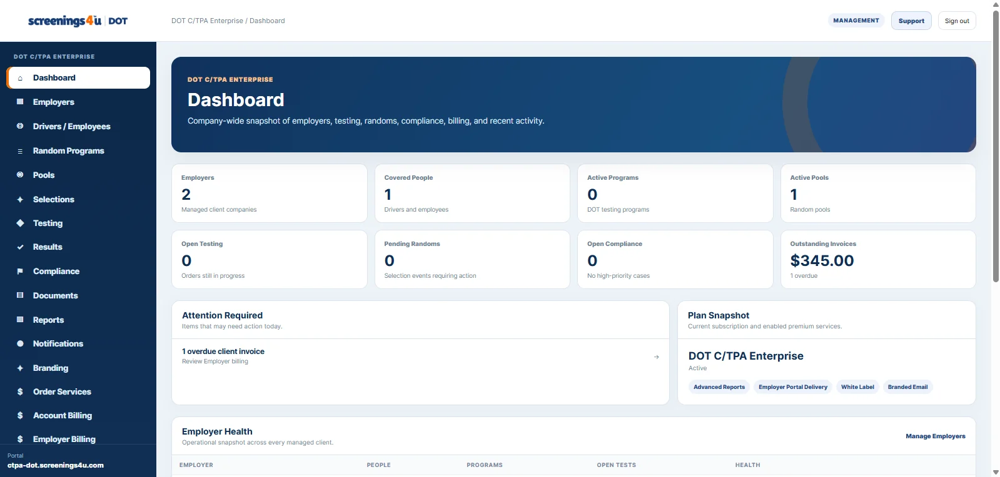
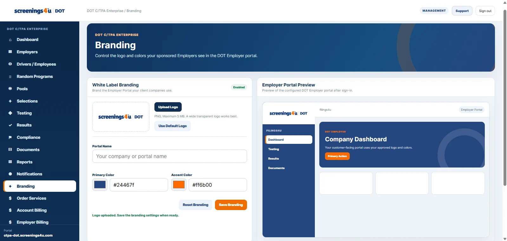

E
Employer Portfolio Management
Manage multiple employer clients without creating disconnected systems.
Manage employers, covered workers, consortium pools, selections, testing, compliance activity, documents, reporting, invoicing and client delivery from one workspace.

A C/TPA workspace needs portfolio-level visibility across employers, people, pools, testing and client delivery.
Manage multiple employer clients without creating disconnected systems.
Manage pool membership, eligibility, selections and program activity.
See testing activity across clients from a centralized workspace.
Review program activity by employer, time period or operational scope.
Manage client-related billing and invoicing workflows.
Provide managed employers with access to their relevant software experience.
Enterprise C/TPAs can customize elements of the employer-facing experience.
Enterprise tools can support additional staff and broader operational controls.
Manage consortium pools from the same environment used for employer portfolio administration.

Enterprise C/TPAs can configure employer-facing branding and portal presentation from the C/TPA workspace.

Use date ranges and employer scope to review testing, random events, compliance, documents and results across the managed portfolio.

Keep plan pricing visible while you review the feature differences. When you reach the final price row, the sticky price header gets out of the way.
These optional add-ons and orderable services are maintained in the screenings4u DOT service catalog and are billed separately from the monthly software subscription.
Adds employee / driver capacity above the plan limit.
Adds SSO to a DOT Employer account.
Adds another DOT agency management portal to the same Employer account.
Custom or specialized third-party integration work.
Managed operational testing and compliance assistance.
Implementation assistance, onboarding, and data migration services.
Browse the additional services available to support DOT program operations.
Expanded DOT alcohol testing support with additional compliance and program-management services. Valid for one year.
High-volume DOT alcohol testing solutions for large nationwide fleets with customized reporting solutions.
DOT alcohol testing support when a qualifying transportation incident requires testing.
DOT breath alcohol testing support for applicable transportation employment requirements.
DOT alcohol testing support for applicable random testing selections and compliance requirements.
DOT alcohol testing support for applicable reasonable-suspicion testing situations.
Personalized assistance for drivers and employers who need help understanding or coordinating DOT medical examination requirements.
A comprehensive DOT physical package that combines the complete medical examination with DOT urine drug and breath alcohol testing.
A comprehensive DOT physical package designed for drivers who want the examination and additional compliance-focused documentation support in one service.
A complete DOT physical with added driver-focused documentation support for a straightforward certification process.
A complete DOT physical examination covering the core medical and certification requirements for commercial drivers.
Employer-focused DOT physical scheduling and program support for companies managing physical examinations for their commercial drivers.
Continuous monitored screening for compliance.
Ideal for individual compliance and peace of mind.
Immediate priority processing when time is critical.
Quick results to get your drivers on the road faster.
Full DOT compliance support for required random selections.
Sensitive handling for workplace safety needs.
Mandatory testing support for SAP program compliance.